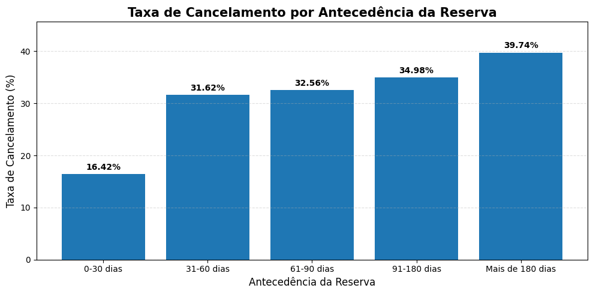

Python • Data Science
Análise Exploratória de Dados - Hotel Booking
Projeto de análise exploratória utilizando Python para investigar padrões, características das reservas e variáveis relacionadas ao cancelamento de reservas em hotéis.
O projeto envolve exploração dos dados, tratamento das informações, análise das variáveis e criação de visualizações para identificar padrões relevantes no conjunto de dados.
Pyhton
Pandas
NumPy
Matplotlib
EAD

 Ver projeto no GitHub →
Ver projeto no GitHub →